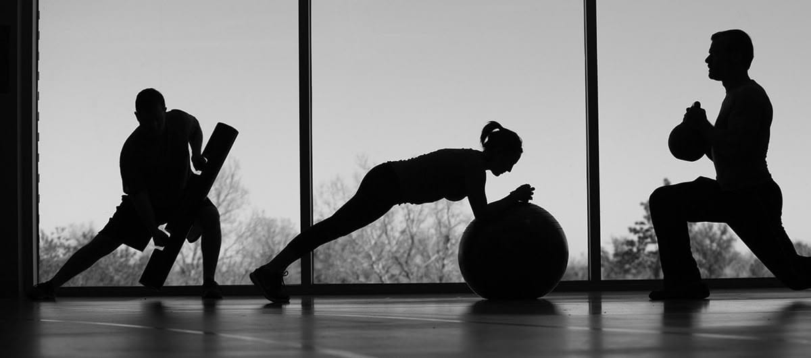

Hubungan Olahraga dan Kesehatan Tubuh dalam Kehidupan Sehari-hari
Olahraga merupakan salah satu cara paling efektif untuk menjaga kesehatan dan kebugaran tubuh. Aktivitas fisik yang dilakukan secara rutin dapat membantu meningkatkan stamina, memperkuat otot, serta menjaga fungsi organ tubuh agar tetap optimal.
Dalam kehidupan sehari-hari, olahraga tidak hanya berperan sebagai aktivitas fisik, tetapi juga sebagai sarana untuk menjaga keseimbangan antara tubuh dan pikiran agar tetap sehat.
Pentingnya Olahraga bagi Tubuh
Olahraga membantu melancarkan peredaran darah, meningkatkan kapasitas paru-paru, dan menjaga kesehatan jantung. Selain itu, olahraga juga berperan dalam menjaga berat badan tetap ideal serta meningkatkan daya tahan tubuh.
Dengan berolahraga secara rutin, tubuh menjadi lebih bugar dan tidak mudah merasa lelah meskipun melakukan aktivitas yang padat setiap hari.
Manfaat Olahraga untuk Kesehatan Mental
Tidak hanya bermanfaat bagi fisik, olahraga juga memiliki dampak positif bagi kesehatan mental. Aktivitas fisik dapat membantu mengurangi stres, meningkatkan suasana hati, dan membuat pikiran lebih tenang.
Hal ini terjadi karena saat berolahraga, tubuh menghasilkan hormon endorfin yang membuat seseorang merasa lebih bahagia.
Jenis Olahraga yang Bisa Dilakukan
- Jalan kaki atau jogging ringan setiap pagi
- Bersepeda di lingkungan sekitar
- Senam atau aerobik sederhana
- Push-up, sit-up, dan latihan kekuatan tubuh
- Yoga untuk relaksasi dan fleksibilitas tubuh
Cara Membiasakan Diri untuk Berolahraga
Membiasakan olahraga dapat dimulai dari hal kecil seperti melakukan peregangan setiap pagi atau berjalan kaki di sekitar rumah. Kunci utamanya adalah konsistensi, bukan intensitas yang berlebihan.
Selain itu, memilih jenis olahraga yang disukai dapat membuat aktivitas ini terasa lebih menyenangkan dan tidak membosankan.
Kesimpulan
Olahraga memiliki peran penting dalam menjaga kesehatan fisik dan mental. Dengan rutin beraktivitas fisik, tubuh akan menjadi lebih kuat, bugar, dan siap menghadapi berbagai aktivitas sehari-hari.